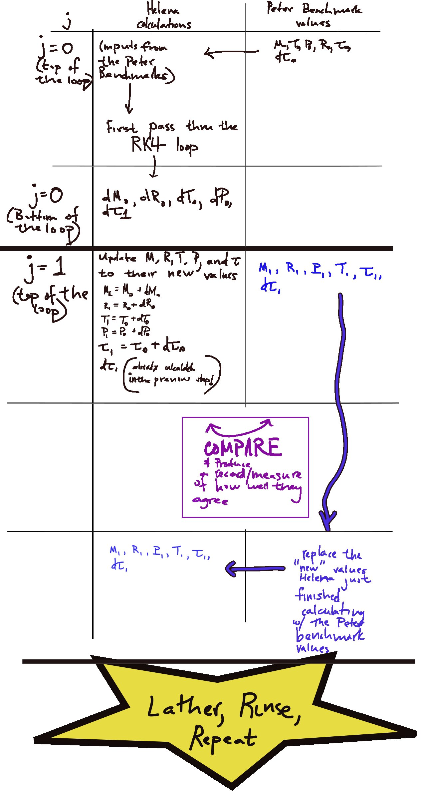
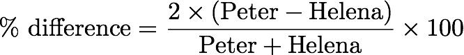

Date & Time: Nov. 1, 2012
Location: Campus
Computing context: /Desktop/Research/CppHenyeyCode, /Desktop/Research/BodenheimerCode/UnalteredCode/
Continuing from last time:
Talked to Greg about my atmos code results not agreeing with Peter's. Based on what he said, the debugging plan is:
Have Helena take in the (M,R,P,T,kappa,rho,nab) values from Peter's code at each step, and have Helena calculate the RHSs of the 4 ODEs and compare them to what Peter's code gets from those same inputs. This step is to verify that the RHSs of the ODEs in Helena are correct.
Read
in the atmos profile produced by Peter's code to python.
Have
python print out each of the (tau,M,R,P,T) values at each step to
its own individual file.
I
forgot to have python put newlines b/w entries when writing the
arrays to file. So, will need to start tomorrow redoing that step
(and all the ones that follow it).
Done.
To Do:

Program
workflow for Helena atmos subroutine debugging
Diagram
1:
See Diagram 1 for the work-flow for the following steps (this is stupid and nitpicky, but very important to get right!)
Read
each of those files into Helena's atmos subroutine, and have it
calculate the atmos profile from those.
Done.
Record
the ratio b/w what Helena calculates and what Peter gets at each
step, Done.
Results stored in
/misc_debugging_records/atmos_vals/ratio_comparison.txt
Plot/compare
the results.
Done. See Figure 1,
below.
Comparison of the atmos
variables (tau, dTau, M, R, T, and P) generated at each step in the
RK4 integration process in Peter and Helena. As the workflow
illustrated in Diagram 1 indicates, Helena's atmos subroutine
started 'anew' at each new cell in the atmosphere, with values fed
in from Peter's code.
The percent error b/w the two codes' results in Figure 1 was defined as:

The take-home point from Figure 1 is: the RK4 calculations-- the actual ODEs, or perhaps the way results from the 4 intermediate steps are assembled-- are messed up in Helena.
If the step above works [it doesn't so disregard what follows], then have Helena do an adaptive tau-step size algorithm (step size halving --> results after 2 steps should be the same as result after 1 step with the larger dTau value)
"Something subtly wrong with my RK4 method... maybe not using an updated value in one of the steps..."
Next time, start by:
having Peter's atmos code print out all of the Mk1, Mk2, etc. values for all 4 variables at each dTau step.
having Helena do the same, using the same 'starting anew at each new cell with fresh values from Peter's code' approach that made the results of Figure 1, here.
Go thru each of the 4 variables, and compare their k1, k2, k3, and k4 step values.
Find with variables, and which k-steps w/in those calcs, are making things go pear-shaped in Helena.